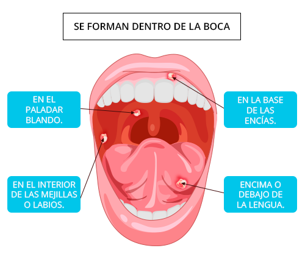

Llagas y aftas

Llagas y aftas
Es probable que hayas tenido alguna en algún momento de tu vida, ya que es un afección de lo más habitual.
Son fácilmente reconocibles, ya que suelen tener una forma redonda de color blanco.
Además, suelen aparecer en la lengua o en la cara interior del labio como consecuencia del roce de un objeto o tras habernos mordido.
Eso sí, no deben confundirse con el herpes labial. Las llagas o aftas no son contagiosas.
Su presencia no entraña ningún riesgo para la salud y no precisan de ningún tratamiento, ya que suelen desaparecer en un período corto de tiempo.